A and B are the same shade

Don't believe it? HERE'S PROOF

WTH
Don't believe it? HERE'S PROOF
WTH
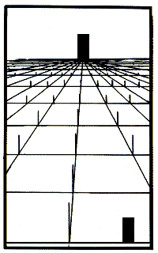
I see nothing stepself...
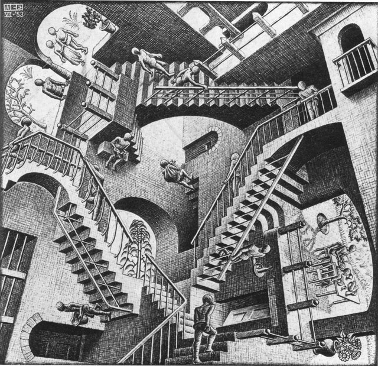

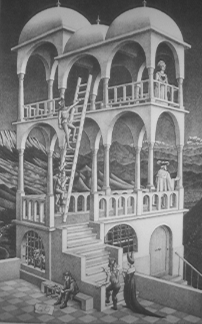

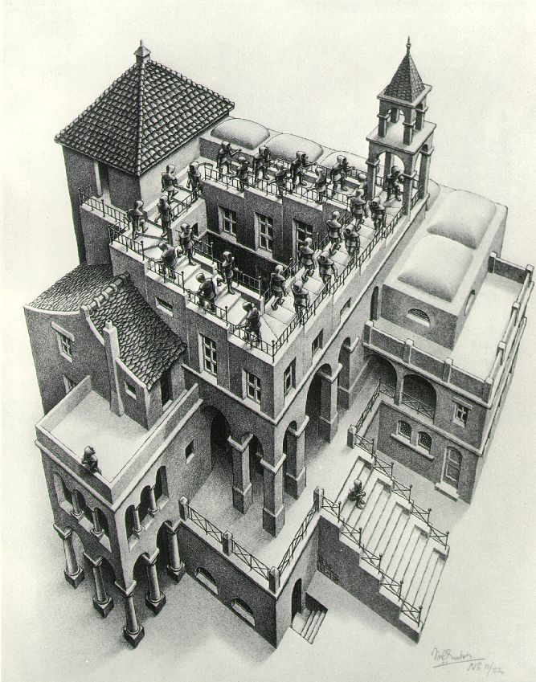
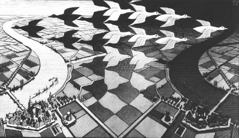
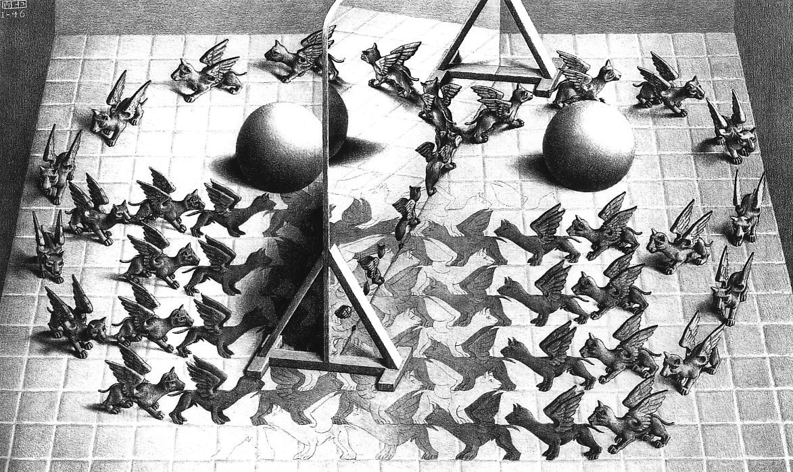
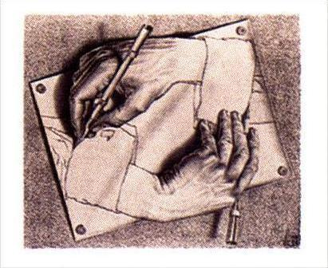
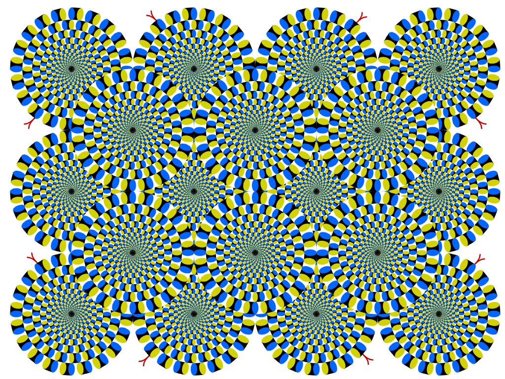
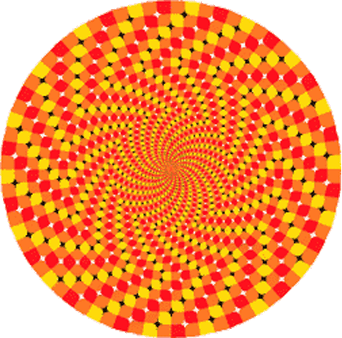
 . Got no idea what he or it is called though.
. Got no idea what he or it is called though. 
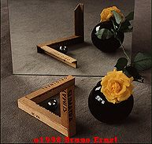


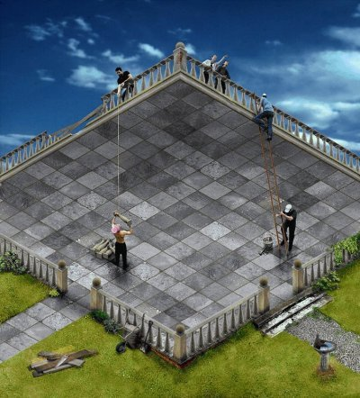
Quote: KABLIZAAAARRRRGHKablizzy Edit: STOP WITH THE USELESS SPOILER TAGS. IT MAKES BABY KABLIZZY CRY.
Is this an optical illusion?
http://www.newrafael.com/sites/rgb/

Is this an optical illusion?Oh god, my brain. I'm having trouble seeing colours now.
http://www.newrafael.com/sites/rgb/
Dolphins + LSD + J-pop
 Yeah... My god! Everything is black and white!
Yeah... My god! Everything is black and white!